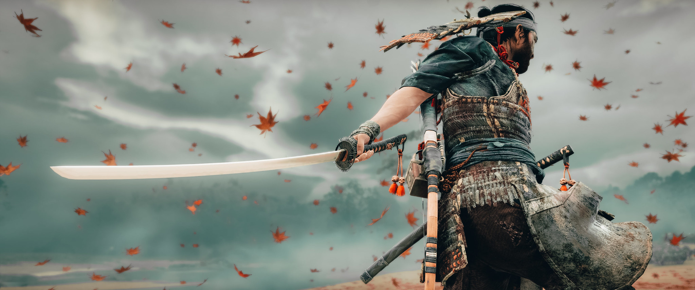

Trofeos Ghost Of Tsushima
Todos los Trofeos y c�mo conseguirlos
Leyenda viviente
Hazte con todos los trofeos
Consigue el resto de trofeos.
Tormenta en ciernes
Recupera la katana del clan Sakai.
Relacionado con la historia, imposible de perder.
Punto de no retorno
Rompe tu c�digo para ayudar a una nueva amiga.Relacionado con la historia, imposible de perder.
Compa��a de lobos
Recluta a los ronin Sombrero de Paja.
Relacionado con la historia, imposible de perder.
Avivando el fuego
Rescata a Taka del cautiverio mongol.
Relacionado con la historia, imposible de perder.
Reuni�n familiar
Libera al se�or Shimura de las garras del kan.
Relacionado con la historia, imposible de perder.
L�der del pueblo
Re�ne a los campesinos de Yarikawa.
Relacionado con la historia, imposible de perder.
Derecho de nacimiento
Recupera la armadura de tu padre.
Relacionado con la historia, imposible de perder.
Ascuas en extinci�n
Erradica a los traidores en nombre de un amigo ca�do.
Relacionado con la historia, imposible de perder.
El Fantasma
Abraza tu nueva identidad.
Relacionado con la historia, imposible de perder.
Alianza de exiliados
Re�nete con tus aliados en el g�lido norte.
Relacionado con la historia, imposible de perder.